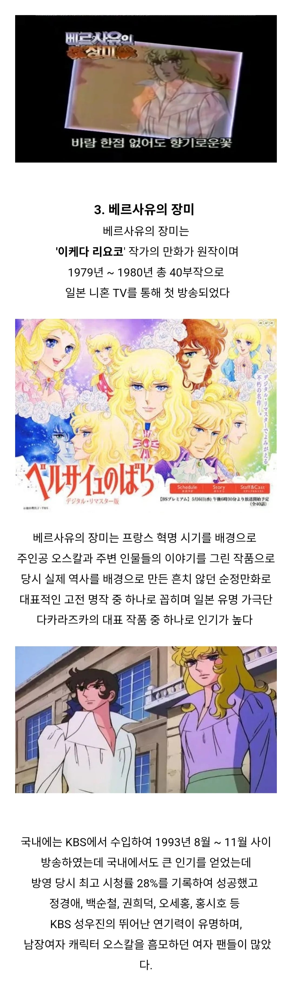

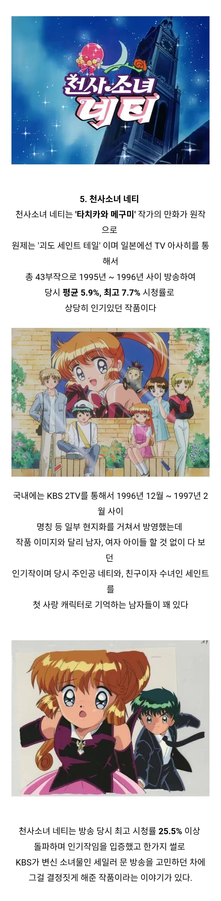
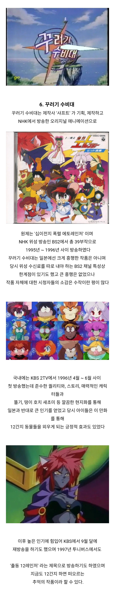
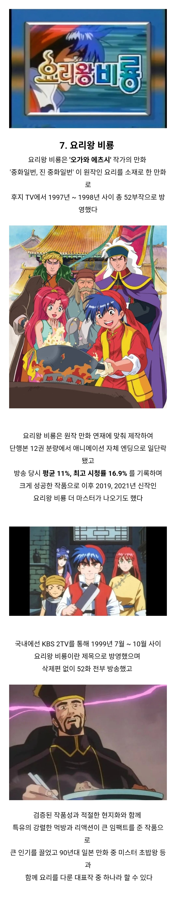

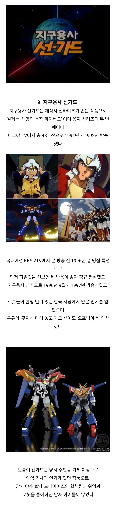
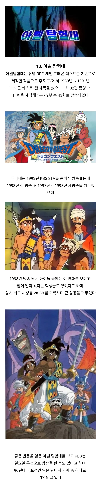

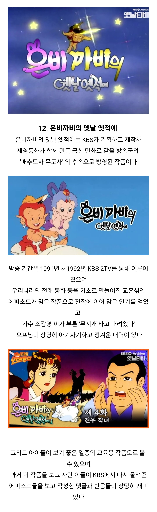
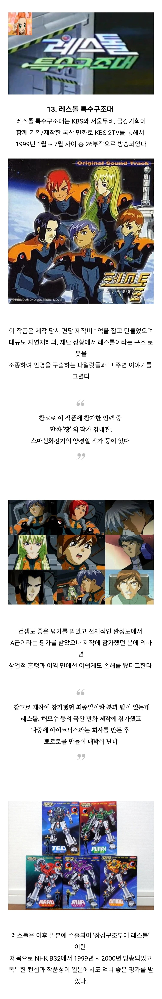

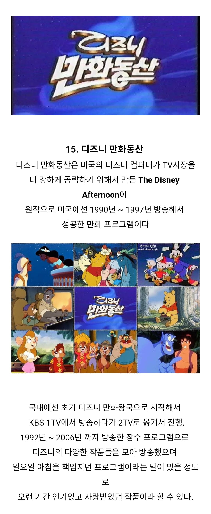
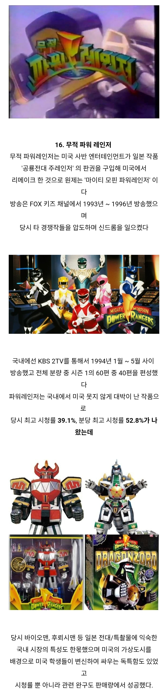


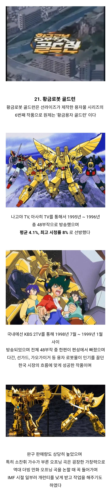
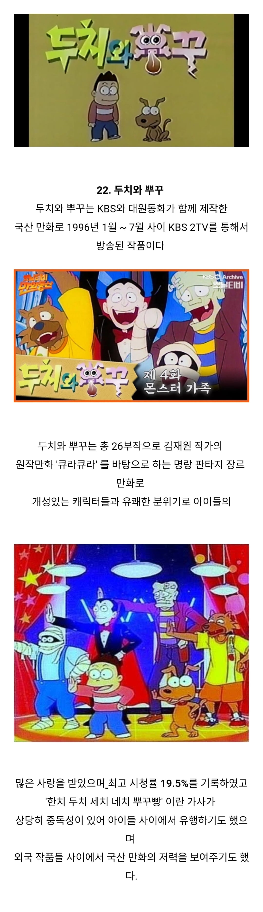

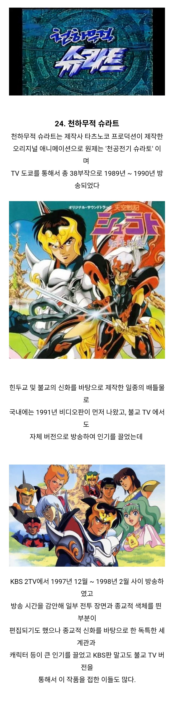















눈물나
아쉽게도 바스토프레몬이 없네
일요일 아침에 디즈니보고 놀다가 노래자랑버티면 국내만화나옴 원더키디나오면 리모컨 던짐
진짜 원더키디 진짜 개씹
추억의작품들이 너무 재밌고 좋았었는데 요즘애들은 저런거 모르고, 알 필요도 없을거라 생각하니 좀 서글프다 아까운데 나나 아깝지 젊은세대일수록 상관도없을테니 ㅠㅜ
저 당시 일본만화가 전성기여서 장르도 컨셉도 폭넓게 볼만한 게 많았지
지금은 만화 아니어도 볼거 많고 요즘 만화들 틀어주면 시청률 반의반도 안나올걸
꾸러기수비대 저거 보고 자란 놈들이 지금 퍼리에 눈을 뜬건가 ㄷㄷㄷ
키키 vs 새초미 vs 키라
디지몬이랑 검정고무신 빼면 다 본적없는 애니네.
나땐 지상파는 어른프로만 하고 초1때부터 다 투니버스,재능 이런데로 넘어가서, 전대도 미국게 아니고 일본 오리지널로만 방영함
황금기 그 자체
그랑죠는??
그게 뭔데
옛날에 일요일날 특집 만화 라고 kbs에서 일본극장판 부터 ova를 1시간에서 2시간 편집으로 해쥤던 기억남
아는게 많이 없넹..
지금 생각해보면 네티는 내로남불로 지가 훔치면 위법성이 조각되는 수준이고 세인트가 정보캐내고 거의 칼만 안들었지 도둑보다 더 나쁜새끼들이었던것같음..
친구들한테는 에이 그런건 여자나 보는거지~ 하고 집에가면 세일러문,카드캡터체리,웨딩피치,천사소녀네티 존나열심히봄
잔느도 넣어줘~
보던건 다 들어가있네
그랑조 워딩피치 없네
그남자 그여자는 투니버스판이 더 괜찮은것 같음 노래도 유명하고
디즈니 만화동산 오리아저씨 쥰내 좋아했는데 ㅠㅠ

구슬동자 어디갔누
mbc껀 인기가 없었나...
웨딩피치랑 k캅스였던가 잼있긴했었는데...
꼬마 마법사 레미, 닥터 슬럼프, 레드바론, 빨강망토 차차, 보거스는 내친구 등등
특히나 차차는 mbc판이 원작보다 초월더빙이었음
다 추억이네 ㅎㅎ
우주보안관 장고, 실버호크, 히맨, 천년여왕 등등 ..
어렸을때 본 기억이나네
90년대 인기 애니에 그랑죠가 없어??? 그랑죠도 엄청 인기많았던걸로 기억하는데...
갠적으로는 아이언리거도 꽤 재미있었는데 이건 모르는사람 많더라ㅋ
늙크크들 여기 다모였네
피코 주인공파티 한 번 전멸하는 거 있어서 진짜 충격이었는데
생각해보니까 존나 어이없는게
일본 애니 수입해서 방송했으면 원제목 그대로 번역하던가해야지. 그게 쪽팔려서 이름 바꿔싸고 그러냐.
존나게 고리타분하고 유교적이고 보수적이긴한거같음
디즈니 만화동산 엄마가 별로 안좋아했음
내가 아침일찍 일어나서 저거보고 밥달라해서ㅋㅋㅋㅋ
저 당시 7시에 했나 9시에 했나 일요일마다 일어나서 저거보느라 교회 안간다고 떼썻음 ㅋㅋㅋ 교회가면 못봤었지 ㅋㅋㅋ
레스톨 특수구조대 < 컨셉도 좋고 나름 재밌었지 수작이다
나도 저거 본 세대지만 요즘 감각으로는 저녁 6시나 아침 9시에 지상파 3사에서 죄다 만화 그것도 엥간하면 하트작들 방영하는건 상상도 안됨
크 이거 볼때가 좋았지 볼트론 정글북 그랑죠 뾰로롱꼬마마녀 빠짐